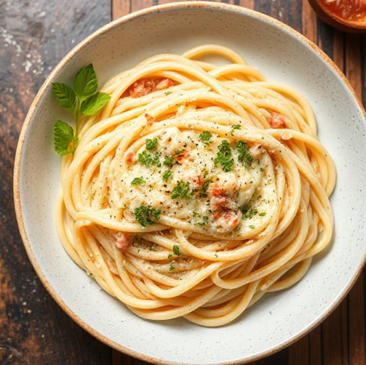

White Sauce Pasta
Ingredients:
- 200g pasta
- 2 tablespoons butter
- 1 tablespoon all-purpose flour
- 1 1/2 cups milk
- 1/4 teaspoon black pepper
- 1/4 teaspoon nutmeg (optional)
- 1/4 cup grated cheese
- 1 cup mixed vegetables
- Salt to taste
- 2 cloves garlic, minced
- 2 tablespoons olive oil
Instructions:
-
Cook the Pasta:Boil the pasta according to the package instructions until al dente. Drain and set aside.
-
Sauté the Vegetables (Optional): In a skillet, heat olive oil over medium heat. Add minced garlic and sauté until fragrant. Add the mixed vegetables and cook until tender. Set aside.
-
Prepare the White Sauce:
- In a saucepan, melt butter over medium heat.
- Add flour and stir continuously, cooking until it forms a smooth paste (roux) without turning brown.
- Gradually whisk in the milk, ensuring no lumps form.
- Continue to cook and stir the sauce until it thickens.
- Season with salt, black pepper, and nutmeg.
-
Combine:
- Add the cooked pasta and sautéed vegetables (if using) to the saucepan with the white sauce.
- Mix well to coat the pasta evenly with the sauce.
-
Add Cheese: Stir in the grated cheese until melted and well incorporated.
-
Serve: Plate the pasta and garnish with extra cheese or fresh herbs if desired.